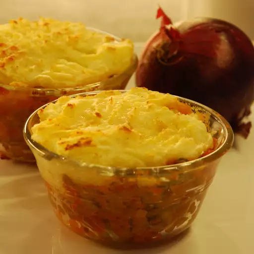

Vegan Shepherd's Pie

Description
This shepherd's pie is just like the one my mom used to make,
but it's made with vegan ingredients. All amounts are approximate
and can be altered to your tastes.
Ingredients
Mashed potato layer:
- 5 russet potatoes, peeled and cut into 1-inch cubes
- ½ cup vegan mayonnaise
- ½ cup soy milk
- ¼ cup olive oil
- 3 tablespoons vegan cream cheese substitute (such as Tofutti)
- 2 teaspoons salt
Steps
-
Place potatoes in a pot, cover with cold water,
and bring to a boil over medium-high heat.
Turn the heat to medium-low, and boil potatoes until tender,
about 25 minutes; drain.
-
Stir vegan mayonnaise, soy milk, olive oil, vegan cream cheese,
and salt into potatoes, and mash with a potato masher
until smooth and fluffy. Set mashed potatoes aside.
-
Todo: Others steps